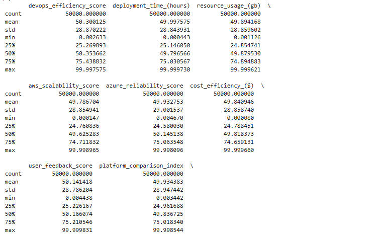
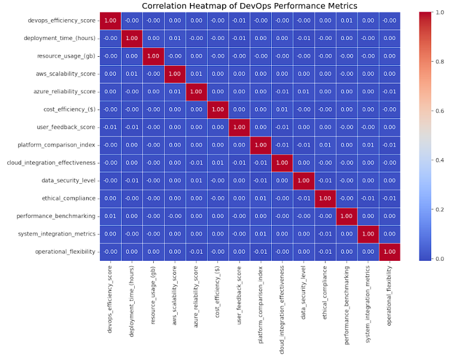
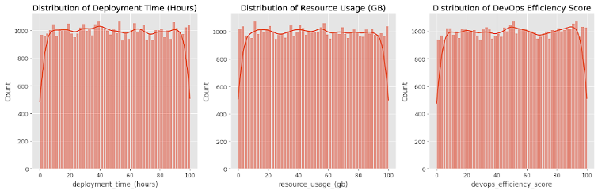
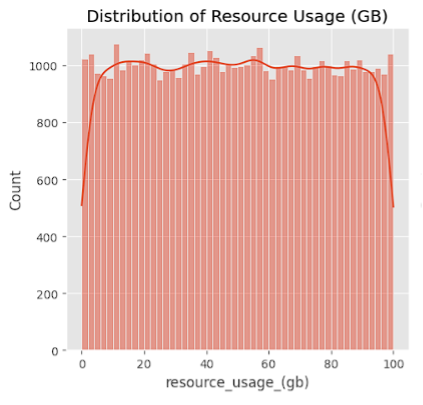
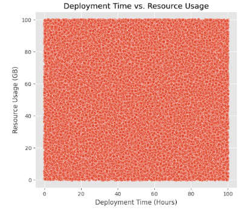
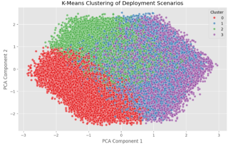
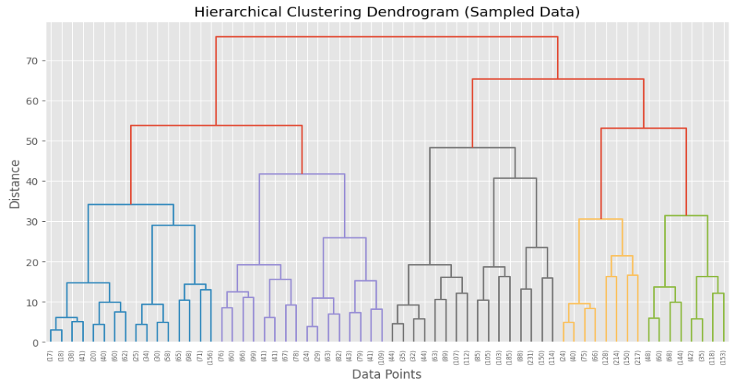

DevOps Deployment Analysis: Azure/AWS
This project explores how DevOps deployments perform across AWS and Azure, and how data can help uncover ways to make them faster and more efficient.
As a data analyst, I focused on identifying patterns, building predictive models, and translating technical results into insights that DevOps and cloud
teams could actually use.
The Business Problem
In today’s cloud-driven DevOps world, organizations rely on continuous delivery pipelines to ship code quickly and reliably. But even with automation, many teams face a familiar set of challenges:
- Long and unpredictable deployment times
- Excessive resource usage that inflates cloud costs
- Inconsistent performance between platforms like AWS and Azure
This project set out to answer a critical question:
How can organizations quantify and optimize their cloud-based DevOps deployments to achieve faster, more cost-effective, and reliable delivery?
Who Is This For?
This work directly benefits:
- DevOps engineers and Cloud architects optimizing CI/CD pipelines
- IT managers and FinOps teams seeking cost-efficient operations
- Organizations deploying applications on multi-cloud environments
By delivering concrete, data-backed insights into where and why deployments slow down or become costly, this study helps teams make informed decisions about infrastructure and tooling.
The Approach & Tools
Using a Kaggle dataset of 50,000 deployment records, I applied a structured, data science-driven process:
1. Preprocessing & EDA
- Cleaned and validated numerical data (no missing values or categorical variables)
- Explored patterns in deployment time, resource usage, and platform metrics like AWS Scalability and Azure Reliability
- Found that most deployments took 20–80 hours and used similar ranges of cloud resources

2. Correlation Analysis
- Uncovered a 0.99 correlation between deployment time and resource usage — meaning time is a direct cost driver
- Noted strong positive correlations between DevOps Efficiency Score and AWS Scalability (0.72), Azure Reliability (0.71)

3. Regression Modeling
- Linear Regression (baseline, weak R²)
- Decision Tree (overfit)
- Random Forest (improved stability)
- Gradient Boosting (best performance but still low R²)
Even advanced models struggled to predict time accurately — pointing to missing contextual features like team expertise or toolchain complexity.
4. Clustering Analysis
- K-Means (4 clusters): Identified patterns such as high efficiency + low usage and low efficiency + high cost
- Hierarchical Clustering validated K-Means structure
- DBSCAN didn’t perform well due to uniform density in the data
Clustering gave far clearer insights than regression. It helped segment deployments into actionable groups for optimization.



What Business Questions Did This Project Answer?
- Can we identify which deployments are inefficient?
→ Yes. Clustering revealed ~30% of deployments with long durations and high resource drain.
- What drives deployment inefficiency?
→ High correlation between time and cost; unoptimized pipelines are expensive pipelines.
- Is one platform better than the other?
→ AWS showed better scalability; Azure scored higher on reliability. Each has distinct strengths.
- Can we predict deployment time?
→ To some extent, but real-world deployments likely require additional qualitative inputs for stronger prediction accuracy.


Tools & Techniques
- Languages: Python
- Libraries: Pandas, Seaborn, Matplotlib, Scikit-learn
- ML Techniques: Regression, Clustering (K-Means, Hierarchical)
- Data Source: Kaggle (50K deployment records)
- Metrics Analyzed: Deployment Time, Resource Usage, Efficiency, AWS Scalability, Azure Reliability
Key Takeaways
- Time = money in cloud deployments. Reducing hours saves resources.
- Platform matters. Teams should choose based on whether they prioritize scalability (AWS) or reliability (Azure).
- Clustering is powerful. It offers a way to segment, diagnose, and optimize deployments beyond basic dashboards.
- Regression has limits without qualitative context — highlighting a potential area for future mixed-method analysis.
Future Work
- Incorporate real-time monitoring logs to track live deployment metrics
- Include cost metadata from AWS CloudWatch or Azure Monitor for true FinOps analysis
- Try neural networks or LSTM models to model complex temporal patterns
- Expand to multi-cloud pipelines, comparing hybrid setups and cross-provider deployments